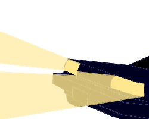

<div>
  <div class="sad-header">
    <audio hidden muted>
      <source src="../../../assets/sensationanddesire.mp3" type="audio/mpeg">
    </audio>
    <div class="sad-title">
      <div class="sad-moontide">MOONTIDE</div> <div class="sad-crossbridge">CROSSBRIDGE</div> <div class="sad-revelry">REVELRY</div>
    </div>
    <div>
      <span class="sad-extra" (click)="openDisclaimerDialog()">disclaimer</span>|<span class="sad-extra" (click)="openUpdatesDialog()">updates</span>|<span [ngClass]="{'sad-extra': true, 'sad-audio': true, 'muted': muted}" (click)="toggleAudio()">audio</span>
    </div>
    <div *ngIf="sadNode" class="sad-select">
      <select #sadSelect (change)="updateSadNode(+sadSelect.value)">
        <option *ngFor="let sad of sads"
          [value]="sad.id"
          [selected]="sadNode?.id === sad.id">
          {{sad.id + 1}}: {{sad.title}}
        </option>
      </select>
    </div>
  </div>
  <div class="sad-page">
    <div class="sad-navigation">
      <div style="position: fixed; top: 150px; left: 0px;">
        
      </div>
      <div style="position: fixed; top: 220px; left: 0px;">
        
      </div>
    </div>
    <div class="sad-content">
      <div *ngIf="sadNode" class="sad-content-full">{{sadNode.contentFull}}</div>
    </div>
    <div class="sad-navigation">
      <div style="position: fixed; top: 150px; right: 0px;">
        
      </div>
      <div style="position: fixed; top: 220px; right: 0px;">
        
      </div>
    </div>
    <div class="sad-background left">
      
    </div>
    <div class="sad-background right">
      
    </div>
  </div>
</div>